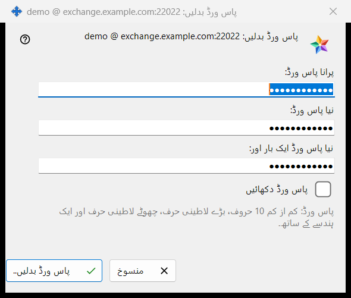
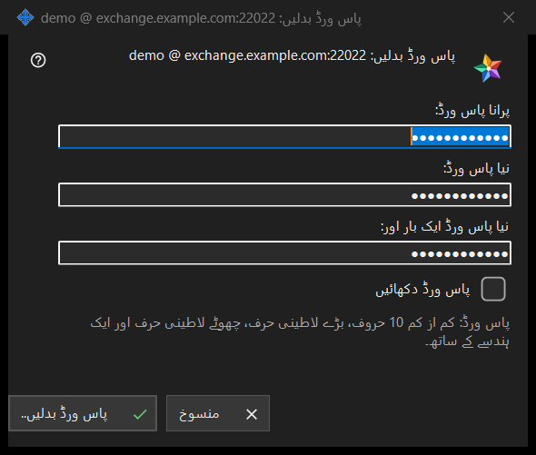

پاس ورڈ بدلیں
یہ کس مقصد کے لیے ہے
اس ایکسچینج اکاؤنٹ کا پاس ورڈ بدلتا ہے جس میں یہ پی سی سائن اِن ہے۔ یہ Share Manager کی ترتیبات کے ایکسچینج اکاؤنٹ گروپ میں پاس ورڈ بدلیں.. بٹن سے کھلتا ہے؛ یہ بٹن صرف تب نظر آتا ہے جب اکاؤنٹ منسلک ہو۔ عنوان میں اکاؤنٹ کا نام لاگ اِن @ سرور کی شکل میں آتا ہے۔ ونڈو خود کچھ نہیں بھیجتی: وہ آپ کے لکھے کی جانچ کر کے اسے لوٹا دیتی ہے، بھیجنے کا کام اس پی سی کا کنکشن کرتا ہے، اور آخری فیصلہ سرور کا ہے۔


اس ترتیب میں
- Share Manager کی ترتیبات میں ایکسچینج اکاؤنٹ گروپ میں پاس ورڈ بدلیں.. دبائیں۔
- پرانا پاس ورڈ: فیلڈ میں پرانا پاس ورڈ لکھیں۔
- نیا پاس ورڈ: فیلڈ میں نیا پاس ورڈ لکھیں اور اسے نیا پاس ورڈ ایک بار اور: فیلڈ میں دہرائیں۔
- تینوں فیلڈ جانچنے کے لیے پاس ورڈ دکھائیں پر نشان لگائیں۔
- پاس ورڈ بدلیں.. دبائیں؛ اگر انتباہ کی لائن نظر آئے تو فیلڈ درست کر کے دوبارہ دبائیں۔
- گروپ میں دکھایا گیا جواب پڑھیں۔
عناصر
تین فیلڈ
پرانا پاس ورڈ، نیا پاس ورڈ اور نئے پاس ورڈ کی تکرار۔ تینوں چھپے رہتے ہیں؛ پاس ورڈ دکھائیں کا ایک ہی نشان تینوں کو ایک ساتھ ظاہر کر دیتا ہے اور یاد نہیں رکھا جاتا۔ ونڈو بند ہونے پر فیلڈ خالی کر دیے جاتے ہیں۔
پاس ورڈ کا قاعدہ
فیلڈ کے نیچے کی لائن کہتی ہے: پاس ورڈ: کم از کم 10 حروف، بڑے لاطینی حرف، چھوٹے لاطینی حرف اور ایک ہندسے کے ساتھ۔ ونڈو اسے فوراً جانچتی ہے، اس لیے کچھ بھیجے جانے سے پہلے ہی آپ کو جواب مل جاتا ہے۔
انتباہ کی لائن
بٹن اس ترتیب سے جانچتا ہے: پرانا پاس ورڈ دیں۔ پھر: دونوں پاس ورڈ ایک نہیں ہیں۔ پھر قاعدہ: پاس ورڈ 10 حروف سے چھوٹا ہے۔ یا: پاس ورڈ میں بڑا لاطینی حرف نہیں ہے۔ یا: پاس ورڈ میں چھوٹا لاطینی حرف نہیں ہے۔ یا: پاس ورڈ میں کوئی ہندسہ نہیں ہے۔ پہلا مسئلہ ملتے ہی جانچ رک جاتی ہے، ونڈو کھلی رہتی ہے اور کچھ نہیں بھیجا جاتا۔
دبانے کے بعد کیا ہوتا ہے
درست اندراج پر ونڈو بند ہو جاتی ہے اور گروپ جواب دکھاتا ہے۔ کامیابی پر: پاس ورڈ بدل گیا۔ یہ کمپیوٹر کام کرتا رہے گا، اور اکاونٹ کے دیگر آلات کو دوبارہ سائن اِن کرنا ہوگا۔ دوسرے جوابات: پرانا پاس ورڈ درست نہیں تھا۔ / بہت زیادہ کوششیں۔ ایک منٹ انتظار کر کے دوبارہ کوشش کریں۔ / سرور نے پاس ورڈ بدلنے سے انکار کیا۔ / سرور سے کوئی کنکشن نہیں۔ جڑ کر دوبارہ کوشش کریں۔ اگر سرور کمزور پاس ورڈ مسترد کر دے تو اس کا اپنا جملہ دکھایا جاتا ہے۔
منسوخ اور کی بورڈ کیز
منسوخ یا Esc ونڈو بند کر دیتا ہے اور کچھ نہیں بدلتا؛ Enter پاس ورڈ بدلیں.. بٹن دباتا ہے۔
مینیجر کی ترتیبات · SFTP اشتراک کی ترتیبات · ایکسچینج سرور کی ترتیبات